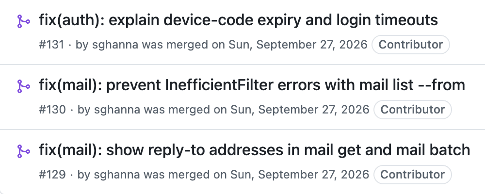

Catch 1 | Caught byCodexwith new tests
The problem
Claude's first sign-in fix called every timeout an expired code, even when the time limit came from somewhere else.
Resolution
Codex's refinement checks which timer actually fired.
Case study | Open-source contribution | Sept 27, 2026
I asked two AI coding agents from different companies to look for bugs and to check each other's work. Three fixes came out of it. I submitted them as my first open-source pull requests, and the maintainer merged all three about 90 minutes later.

Pull requests merged by the maintainer, with no changes requested.
Problems the two AIs caught in each other's work before anything went public.
Past issues and pull requests checked so we did not duplicate anyone's work.
Changes to my mailbox. Every live test was read-only, and Microsoft refused a test write.
01Problem
I keep a separate Outlook.com account only for my job search. I wanted an AI agent to read the job alerts that land there, so I needed a way in that could read mail but never send, delete, or change it. olkcli is a young open-source tool that offers exactly that: a read-only sign-in.
Read-only first. The account holds only job-search mail, and the agent's sign-in can read but not write. We proved it: a harmless test change was refused twice, once by the tool and once by Microsoft.
02Action
"Do you see any bugs in the app that you could help fix?"
Nothing counted until the other AI reproduced it. It is the maker-checker control banks use for payments: the one who prepares a change never approves it.
Why two AIs
In every case, the author's own tests passed. Each problem surfaced only when the other AI checked the work, and all five were fixed before anything went public.
Claude's first sign-in fix called every timeout an expired code, even when the time limit came from somewhere else.
Codex's refinement checks which timer actually fired.
On its own, that refinement brought back the confusing error in the real sign-in command.
The command's 15-minute limit runs out before Microsoft's 15-minute code does, so the command now explains its own limit in plain words.
That plain message also replaced the browser sign-in's specific troubleshooting advice.
Browser sign-in keeps its original advice.
Codex predicted that searches for unread mail would fail too.
They work on the real service; Codex's test server was stricter than Microsoft's. The pull request says so plainly.
Six test names described our review process instead of what the code does.
Renamed, with a file-by-file check that nothing else changed.
How I ran it
Two AIs check each other
"I'll have Codex review your finding."
Nothing counted until the other AI reproduced it.
Check before publishing
"Review everything at this site to be sure these issues have not already been submitted, and that we are submitting them in the appropriate way."
128 past issues and pull requests checked.
Write for the maintainer
"Codex may be better at code, but you may be better at human understandable phrasing."
I had both AIs' drafts laid out side by side on a webpage, and they converged on a combined version.
I decide what goes public
"ok, submit."
Nothing was submitted until I said it.
03Result
All three merged by the maintainer, with no changes requested.
Three pull requests submittedAbout 90 minutesAll three merged by the maintainer
What we submitted
Pull request 129Merged
Reading a single message dropped its Reply-To address, the address a reply should go to. The list view showed it; the detail view lost it.
See it on GitHubPull request 130Merged
Searching mail by sender failed with an InefficientFilter error every time we tried it on Outlook.com. The fix reorders the search to follow Microsoft's documented rule.
See it on GitHubPull request 131Merged
A sign-in that timed out said only "context deadline exceeded." Now it says what happened and what to do, and browser sign-in keeps its existing advice.
See it on GitHubError: polling for token: context deadline exceededAn error nobody could act on.
sign-in was not completed within 15 minutes; run 'olk auth login' againNow it says what happened and what to do.
04My part
I did not write the code.
My part was deciding what the AIs could touch, making them prove their work to each other, and deciding what was ready to publish under my name.
Directed by Shawn Hanna. Built with Claude Code (Claude Opus 5.5) and Codex (GPT-6-Astra-xhigh). Every pull request ends: "The issue and fix were found and built in collaboration between GPT-6-Astra-xhigh and Claude Opus 5.5."